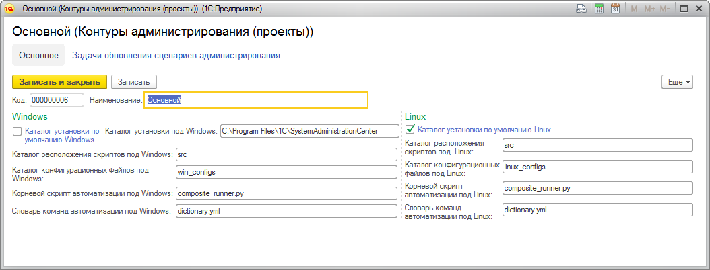

"Центр администрирования" представляет собой инструмент для автоматизации типовых сценариев администрирования и эксплуатации информационных систем, построенных на платформе "1С:Предприятие 8".
Продукт предназначен для специалистов, эксплуатирующих крупные информационные системы.
"Центр администрирования" содержит набор готовых для использования наиболее распространенных сценариев автоматизации:
· установка, обновление, удаление платформы "1С:Предприятие 8";
· обновление конфигурации до требуемой версии;
· запуск внешних обработок;
· изменение настроек контура копированием файлов настроек;
· изменение конфигурации кластера серверов "1С:Предприятия"
· и т.д.
При этом пользователь может создавать собственные и изменять существующие сценарии автоматизации в соответствии со спецификой задач на разных проектах, а также конструировать из простых сценариев более сложные.
"1С:Центр администрирования" предоставляет следующие основные функциональные возможности работы со сценариями:
· запуск сценариев автоматизации в тестовом режиме (контроль корректности сценария, окружения, настроек без изменения состояния системы);
· запуск сценариев автоматизации в рабочем режиме (изменение состояния системы);
· автоматический откат сценариев в случае неудачи;
· планирование и отслеживание работ в календаре;
· разделение на контуры автоматизации (проекты), в рамках которых можно разделять выполнение сценариев и доступ к различным блокам автоматизации;
· формирование отчетов о выполненных работах (чек-листы, сводная статистика и т.д.).
"1С:Центр администрирования" состоит из управляющей части – единого рабочего места администратора – и исполняющей части, устанавливаемой на компьютеры автоматизируемого контура. Распределенная структура продукта позволяет выполнять массовые операции администрирования крупного распределенного контура, например обновлять версию платформы "1С:Предприятие 8" на всех серверах.
"1С:Центр администрирования" может работать и как самостоятельная программа, и как подсистема прикладного решения. Управляющая часть "1С:Центра администрирования" поставляется и в виде отдельной конфигурации, и в виде расширения конфигурации, которое может быть включено в произвольную прикладную конфигурацию, работающую на платформе "1С:Предприятие" версии не ниже 8.3.12.
Преимущества использования "1С:Центра администрирования":
· снижение стоимости владения системой за счет сокращения трудозатрат на ее администрирование;
· сокращение времени обновления на новые версии платформы и конфигураций;
· снижение рисков ошибок администрирования при выполнении задач эксплуатации системы за счет стандартизации сценариев;
· автоматизация процессов тестирования версий конфигурации перед обновлением;
· единый интерфейс для контроля состояния выполнения задач администрирования всего контура.
"1С:Центр администрирования" будет наиболее полезен при внедрении и эксплуатации крупных корпоративных информационных систем с большим количеством рабочих мест и распределенной структурой контура:
· КОРП-внедрения;
· крупный распределенный контур с большим количеством информационных баз и серверов;
· крупная распределенная информационная база, например розничная сеть.
Управляющая часть продукта "Центр администрирования" представляет собой конфигурацию, написанную на встроенном языке 1С:Предприятие 8. Данная конфигурация может использоваться как в качестве самостоятельного продукта, так и быть включенной в состав другого прикладного решения в виде подсистемы.
1. Развернуть базу, обновить конфигурацию.
2. Обновить Агента
3. Опубликовать http-сервис AgentETP (если обновляем ранее развернутую базу, то сервис уже опубликован).
4. Добавить пользователя для работы агента с правами АгентПолныеПрава (если обновляем ранее развернутую базу, то пользователь уже есть).
5. Для работы с функционалом Центра администрирования создаем пользователя с ролью АвтоматизацияПолныеПрава либо добавляем эту роль существующему пользователю (в ЦКК также достаточно роли ПолныеПрава).
6. Загрузить поставляемые данные из файла ПоставляемыеСценарии.xml используя обработку «Загрузка поставляемых сценариев автоматизации XML» из подменю «Сервис» подсистемы «Сценарии администрирования». В результате в базу загрузятся поставляемые команды и шаблоны сценариев.
7. Обновить скрипты на машинах:
· Разархивировать SystemAdministrationCenterScriptsDistr.zip в каталог, доступ к которому есть с каждой машины с установленным Агентом (например, доступный сетевой каталог).
· Положить установочный файл SystemAdministrationCenterPython_win.zip (SystemAdministrationCenterPython_linux.zip) в каталог, доступ к которому есть с каждой машины с установленным Агентом (например, доступный сетевой каталог).
· Выбрать в подменю «Сервис» подсистемы «Сценарии администрирования» раздел «Формирование задач на обновление сценариев»
· Выделить в списке строки Агентов, где необходимо обновить комплект скриптов и нажать кнопку «Инициировать проверку и обновление сценариев администрирования».
· Указать пути к дистрибутиву скриптов и дистрибутиву python (каталоги-источники)
· Остальные данные по каталогам-приемникам будут взяты из Контура администрирования

· Для выполнения обновления скриптов нажать кнопку «Выполнить обновление»
· Успешность настройки машин высвечивается в списке цветом
o серый – задача на обновление сформирована, но еще не запущена;
o желтый – выполняется обновление;
o зеленый – успешно;
o красный – неуспешно.
Система готова к работе!
Для обновления поставляемых сценариев и скриптов при выпуске обновления необходимо выполнить п.п. 6,7 раздела «Первичная настройка».